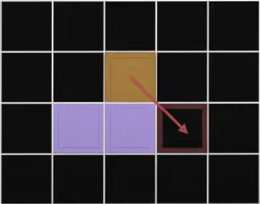
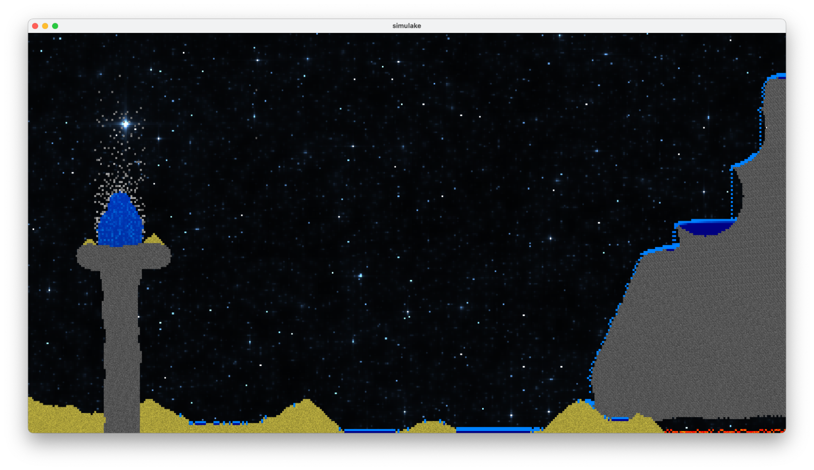
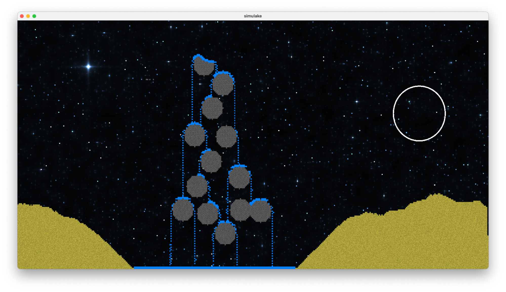
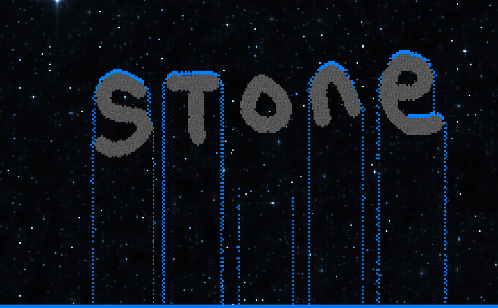
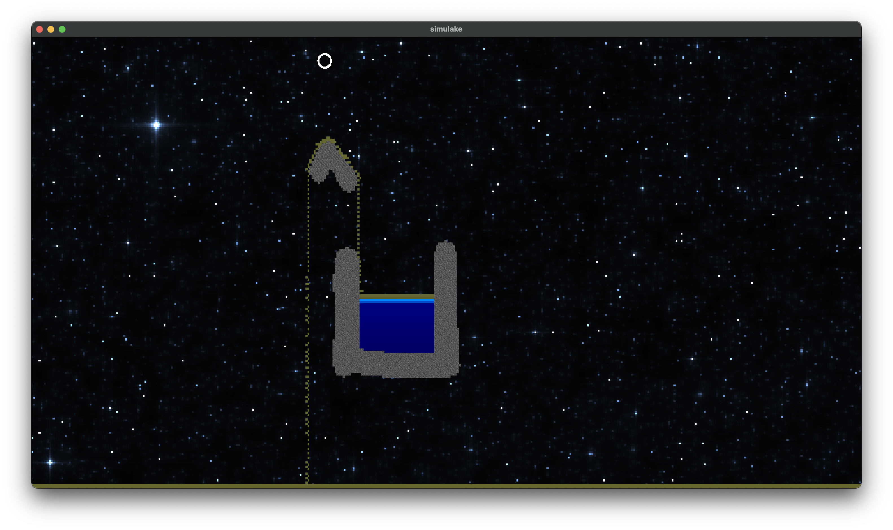
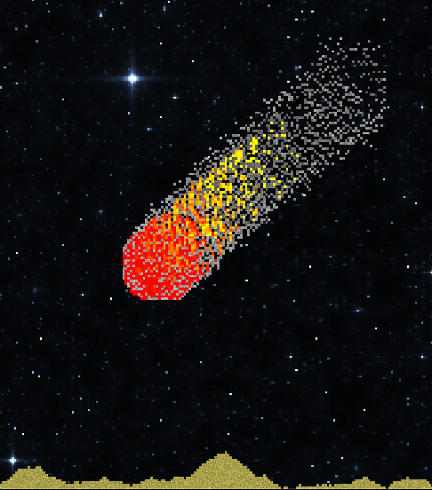
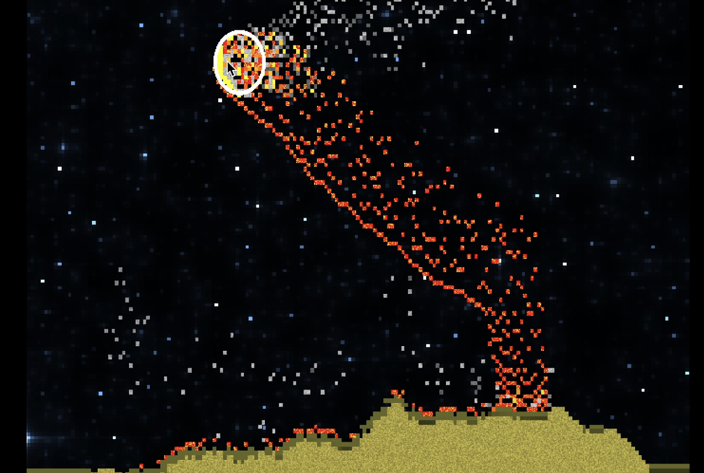
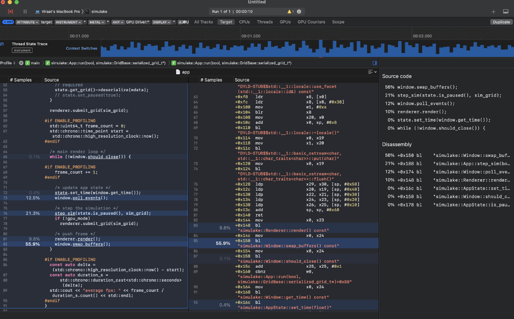
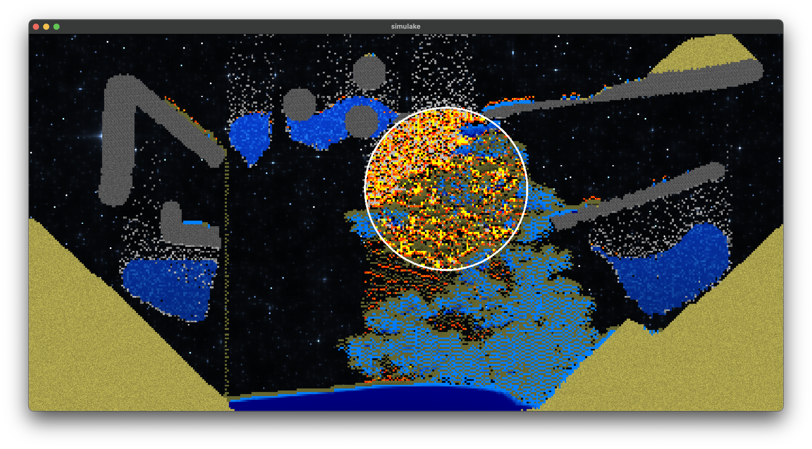
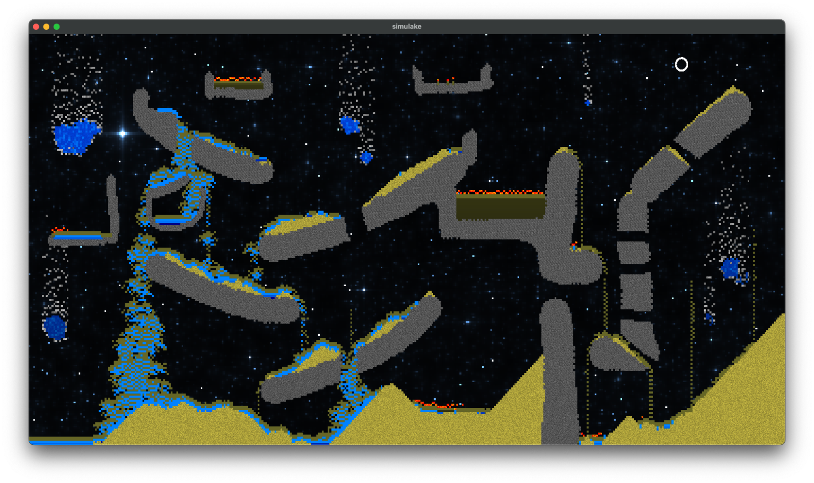

simulake
Cellular Automata Based Physical Rendering

Abstract
Simulake is a 2D sandbox implementing physical simulation in a cell-based format, rather than a traditional pointmass based format. To execute simplified physical rules on a grid, simulake uses concepts of Cellular Automata.
Cellular Automata are discrete mathematical models comprising a grid of cells, each with a finite number of potential states. The cells' states evolve over time according to a predefined set of rules that dictate how a cell's state is influenced by its neighboring cells.
Our team implemented cellular automata logic for sand, water, stone, fire, smoke, oil, jet fuel and greek fire, and created a user input based sandbox where all materials can interact simultaneously. We also designed and implemented a rendering engine from scratch—capable of supporting both CPU and GPU rendering—resulting in a substantial increase in rendering efficiency. Our design choices were inspired by the real-time physical simulation effects observed in the video game Noita, and we opted for a retro aesthetic to complement this influence.
Demo Video
Technical Approach
We render our scene as a 2D grid divided into cells of cell_size large pixels, where each cell can take one of the following cell types: air, smoke, fire, greek fire, jet fuel, water, oil, sand, and stone. Furthermore, we created an object for each of the cell types, and at each time step, we iterated through every single cell in the grid, and called the step() function associated with its type to update the grid state in the next time step. In this section we are going to provide details about the rules in the step() function of each material, and go over the technical aspect of our renderer.

Step() Functions for Materials
Sand
To simulate falling sand and sand piles, we implemented the CA rules as follows:
- If the current cell is sand, and the cell right below it is of a fluid type (i.e. air, smoke, fire, water, oil), swap the cells to simulate sand falling down.
- Else, if the bottom left cell is a fluid, swap the cells.
- Else, if the bottom right cell is a fluid, swap the cells.
- Note: if both bottom left and bottom right are free, one is randomly chosen.
- If none of the cells below the current cell is fluid, leave the cell as is.
|

|
Water (flow + pressure + erosion)
- Water moves vertically + diagonally down and horizontally equalizes across a certain range, giving it a wider range of motion than sand.
- The mass of each cell is also taken into account, so that a water cell can get compressed and contain more mass than the water cell above it.
- To simulate pressure, if the mass of a water cell exceeds a certain threshold, water will flow back upward.
- If water flows diagonally on top of soil, it will erode and displace the nearest soil cell with a low probability.
- Our final algorithm for water behavior consists of hundreds of lines of code, as a result of iterating upon both ideas found online and our own mathematical reasoning.
|

|

|
Stone
- Stone is represented as a static solid material with no interactions or reactions with its surroundings.
- This simple model can be useful for creating landscapes or geological formations, where we want the stone to stay still.
|

|
Oil
Oil acts like slightly more viscous water, and will always rise above water when mixed with it.
|

|
Smoke and Fire
For a fire cell, we consider its 8 neighboring cells:- If the neighboring cell is flammable (sand and oil), change it to fire.
- Else if it’s air, turn into smoke with probability p.
- Else if it’s water, change it to smoke (steam).
A fire cell can also turn into air randomly, indicating that the fire has died down.
|

|
Jet Fuel
- Jet fuel acts like a liquid, burns through sand, keeps burning on oil and is extinguished by water.
- The probability of combustion depends on the presence of nearby combustible materials.
|

|
Greek Fire
- The fire is similar in logic to our earlier implementation of jet fuel, but it burns eternally without the need for additional fuel.
- The fire destroys sand cells when it comes into contact with them, but can be extinguished by water cells.

|
Architecture

|
Rendering Engine
Our rendering engine was written entirely from scratch using C++ and OpenGL. Our OpenGL (glad, glfw, gl), OpenCL (C) and OpenMP (C++) calls are secluded into individual files, which include guards to configure the backend based on compile flags and available support.
We have a backend agnostic GridBase Class for Grid Types, which are responsible for:
- Storing and maintaining the simulation state
- Serialization to disk and deserialization from disk (so that scenes can be saved and replayed)
- Providing an API to update state using mouse input and direct function calls.
We experimented with multiple iterations before settling on our final approach:
- Bind vertices and texture coordinates for a single quad that covers the viewport
- Serialize and pass our grid data to a 1D buffer read by the fragment shader
- (cell_type0, cell_mass0, …, cell_type_n, mass_n)
- CPU implementation: we pass this to the fragment shader through glTexImage2D
- GPU implementation: we write new state data directly into GPU memory through an OpenCL kernel, avoiding CPU memory transfer entirely
- Sample the grid “texture” in the fragment shader from a GLSL Sampler2D buffer and decode the (cell_type, cell_mass) attributes that correspond to the given pixel (one cell can occupy multiple screen pixels, so we used interpolated texture coordinates from the vertex shader)
- Procedurally generate material textures in the fragment shader using pseudo random number generation seeded with gl_FragCoord and mixing various noise functions (we used Voronoi and Fractal Brownian Noise)
Simulation Engine - CPU Implementation
GridCell:
- CA-cell, contains attributes: TypeID, Mass, 2D-Velocity, Updated bit.
- packed & aligned to 16 Bytes, for better cache performance and latencies.
- particular materials are subclasses (C++ CRTP to avoid V-table overhead) with diff step functions and properties.
Grid:
- representation of the world, 2D array of GridCells. Runs the simulation and passes render info to the renderer.
- uses double buffering: read state from last grid to compute new grid. Swap pointers after simulation complete
- copies data into glTexture: encode [cell type, mass] into float value slots of texture, passed to fragment shader.
- utilizes OpenMP to parallelize the main hot loop iterating over cells. Splits the 2D loop into rows to be processed by different threads from a thread pool (retain threads to avoid creation / destruction overheads). Double buffering helps as no race-condition for reading in reading the last state
Simulation Engine - GPU Implementation
DeviceCell:
- CA-cell, contains attributes: TypeID, Mass, 2D-Velocity, Updated bit
- 16 Byte packed, aligned struct in gpu memory
- Particular materials are processed by their own step functions, depending on type being processed by a given kernel thread.
DeviceGrid:
- Class for initializing, and maintaining OpenCL state.
- Launches GPU kernels by using and in-order completion OpenCL Command Queue
- We eliminate all GPU-kernel completion waits, and use OpenCL async features to queue up as much work as possible before synchronization is needed.
- Contains API to set a target OpenGL texture bind, which will be acquired (no-copies) before render kernel call, which encodes cell attributes into floats and fills color slots in image. We use 2 of the currently available 4 slots: [type-id, mass, 0.0f, 0.0f]
GPU Compute Kernels:
Individual kernels implemented for initialization of grid (defaults to AIR filled grid), random-initialization (for testing / debugging / demo), simulation step, fluid step (second pass helpful for fluids which needs the updated state, to further modify the updated state. executed after simulation step kernel completes), render (encode grid into cl_image, which is connected internally to a glTexture2D), and spawn cells (handle mouse input for spawning and erasing cells).
Data is never directly read nor modified from CPU side, all manipulations to cl_mem buffers storing the grid cells are done on GPU using double buffering. We also use OpenCL compile arguments to trade fp-accuracy for throughput (fast gpu math).
We just swap the kernel arguments before launch, depending on which grid to use as previous-state, and which for target updated state.
Code involves heavy use of macros for automatic struct, callbacks and function declarations / definitions (inspiration taken from PyTorch codebase), inline function calls and minimized branching.
We added Pseudo Random Number Generation (not supported in any capacity by OpenCL), to make our behaviors more stochastic. This was done by initializing a buffer of random seeds (from C++ stdlib generators) in the GPU, when DeviceGrid is created. Then our random number functions within the OpenCL program, accessed using simple macros, will read in the current cell (row, col) seed, update the seed using Java-Random algorithm (we have support for XOR shift, Mersenne Twister as well), and give a random number. This way, each kernel thread can have its own string of random numbers over time.
We implemented random floating point values, and values between ranges for both integers and floats using this base algorithm. This means we have a one time initialization cost, and get cheap pseudo random number generation.
Tooling
We implemented all code from scratch including our CMAKE configs. We utilized modern best practices with C++ 20 (CRTP, Lambdas, Perfect Forwarding, Rule of 5, Rule of 3, extensive operator overloading, smart pointers etc., optimized branches [branchless, attr [[unlikely]] etc], had strict conventions on code style, static analysis using llvm-clangd and llvm-clangtidy, used addressed sanitizer to check for memory leaks, codebase is const-correct, llvm-clang-format for formatting, google-benchmark for benchmarking, glm with SIMD enabled for CPU side math. We implemented and profiled both Row-major and Col-major buffer storage.
We have ~5k LoC (excluding header files, libraries, CMake scripts, config files).
- ~3.2k for Application, Window, Loader, utils, and CPU Grid/Cell code.
- ~1.2k for Shaders (OpenCL Compute, OpenGL vertex, OpenGL fragment)
Performance & Benchmarking
We added our own debugging and benchmarking structures for time and latency measurement, which can be accessed with convenience macros like `PROFILE_SCOPE(“myscope”)` and `PROFILE_FUNCTION()`, `BREAKPOINT()` etc. We used the CMAKE xcode generator to generate xcode project files, and used Xcode profiling tools to help us find bottlenecks and mitigate them, to achieve minimal overhead.
On the CPU Side, the biggest bottleneck is `grid.type_at` which reads a cell from the 2D grid of cells, and returns its type. This is where 53% of our time is spent, waiting for data to load in. We brought this time down from ~70% by using aligned and packed structs. We maintain >100 fps for resolutions up to 1080p, beyond which we get a performance cliff.
On the GPU Side, the biggest bottleneck is `glfwSwapBuffers` call which takes ~55% of total time. Even when operating on big world sizes: eg: at 8M cells (4K resolution), we are able to simulate a full scene and compute the next frame, even before the display is ready to receive the next frame after displaying it (resolutions up to 4k all run pretty much >200 fps all the time, we did not test it further, but the profiling data is encouraging and points we have more bandwidth & capacity to exploit with the current implementation).
|

|
Problems Encountered and Lessons Learned
1. Lagging Support for Velocity Attribute
Problem: Initially, a pixel could only move 1 pixel max, in 1 sim step, but this made water appear very viscous, almost like honey.
Solution: We added a parameter horizontal_reach to allow liquids to spread across n horizontal neighbors in a single time step.
2. Race Conditions
No particular order of cell processing on GPU / Multithreaded CPU, leads to loss of mass / particles due to concurrent overwrites into the next state being computed.
We initially wanted to maintain the invariance that a grid cell can read previous state from the entire grid, but cannot update the next state for any other cell indices, ie. a cell can only update itself depending on its neighbors.
We quickly ran into issues with this restriction, when implementing water which has multiple directions of flow of mass, and a single water cell can be filled in by multiple neighboring water cells.
On CPU we decided to deal with this by splitting workgroups into rows, as this was the most prominent access pattern (achieved by our water logic).
On GPU we decided to deal with this by splitting work groups into chunks of 10x10, within which we tolerate race-conditions and compensate for the lost mass and particles. Towards the deadline, we added another Simulation Pass just for fluids, who need to read the updated state, to update the state further (eg: water needs to know where water is right now, to handle its flow edge cases), but were not able to adapt our fluids to take advantage of this in time.
3. GPU PRNG issues
Problem: OpenCL doesn’t have a random number generator, but we needed one to model behavior like sand spread, flame/smoke rise and sand erosion.
Solution: We created a pseudorandom number generator (PRNG) based on an initial seed matrix of random numbers, row/col number, mass and hashing.
- Initial attempt was to use (row, col, mass) as a seed, but this was not unique enough because of correlation of nearby cells
- We ended up using the sophisticated PRNG setup elaborated above. This results in much better visuals and finer grained control over behaviors.
4. Oil - Water Interaction
Problem: an oil cell found below a water cell should swap places, but we always ran into undefined behavior because the oil-water swap would face a race condition with regular oil/water flow.
Solution: we decided to implement another GPU grid pass just for vertically swapping fluids of different densities so it wouldn’t conflict with regular flow.
Rationale
Q. Why Choose OpenGL 3.3, instead of a more modern version?
Apple deprecated support for OpenGL on MacOs in favor of Metal. We desired a cross platform software, so we had to stick with the OpenGL version we had available on all our devices (MacBooks). We avoided Metal due to its specificity to MacOS, and Vulkan was not chosen for this project, we required a very basic renderer and the verbosity of Vulkan is not justified for our scale of application. Furthermore, we are happy with single threaded render loops, and so did not require any of the additional capabilities offered by the other APIs.
Q. What was the need for GPU accelerated simulation, despite also having a CPU Multi Threaded Version?
We wanted to implement an engine for CA simulation, with vast capabilities in terms of Number Of Cells being simulated with High FPs. We hit a point on the CPU Version where the memory access latency for just reading and writing to our internal grid representation (despite using Packed Aligned Structs optimized for Cache), was the biggest bottleneck of the program. We decided to add a GPU implementation after realizing the performance roof of the CPU version, as well as profiling the program to not be fully utilizing the GPU resources already available.
Q. Why Use OpenCL at all? Why not do simulation logic in Fragment shader, which is a standard Approach?
OpenGL 3.3 doesn’t support glBuffers, and even writable-textures. Initially we were using vertex attributes to pass in the relevant data for rendering. We hit a ceiling because of the limited number & sizes of these, conflicting with our desire to support more attributes than just Mass (velocity, updated bit etc). We figured out a way to pass more data in using non-writable Textures instead (16Kx16K limit), but the lack of glBuffers, writable buffers/textures, and lack of any support for Compute Shaders lead us to pivot our simulation engine to OpenCL.
We implemented all our materials in OpenCL kernels, and optimized the OpenCL - OpenGL interop in a cross-platform manner such that the CA Grids internal representation is allocated and stored completely in GPU memory, and a special OpenCL kernel can render our grid into a glTexture / Image directly by using the gl resource pointer. This means no copies are made even within GPU memory, no data is copied into CPU, and these GPU buffers can be HOST_READ_ONLY for better performance. All the CPU does in our latest implementation is launch the async OpenCL simulation and render kernels, and then complete a render pass using OpenGL where the target texture is already filled in. Our main render loop is just 1 line of code, drawing our screen size quad, with our computed texture.
Results

|

|
|

|

|
Contributions of Team Members
Viraat Chandra: Implemented CPU & GPU Engine, GPU material algorithms, optimization, profiling, and sw-design.
Atharva Patil: Researched and implemented liquid design + algorithms for water/oil/erosion.
Joe Mo: Implemented application state management, renderer, frag shader, jet fuel logic.
May Liu: Implemented the initial sand, fire, and smoke logic. Organized the deliverable webpage.
References
Study on Sand Simulation in Noita
An Exploration of Cellular Automata and Graph Based Game Systems